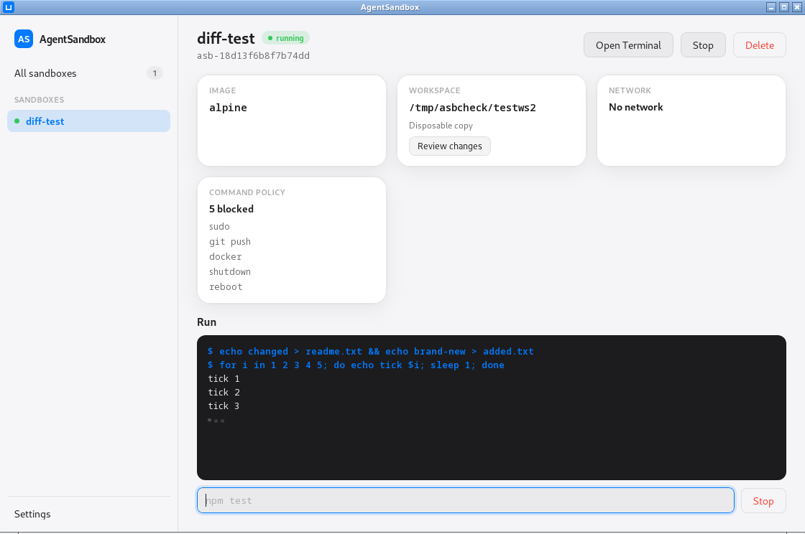

AgentSandbox executes coding agents inside disposable Docker containers with filesystem, network, and command policies — and shows you every change before it touches your files.

Every sandbox is a container with three independent lines of defense — and a paper trail.
Your project is copied into the container. The agent edits the copy; the original on disk is untouched until you say otherwise. Read-only and read-write mounts are there when you want them.
One click shows a colored diff of everything the agent changed —
build artifacts excluded. Apply syncs it back with deletions included,
and never touches your .git.
No network, full network, or an allowlist: the sandbox joins an internal Docker network whose only way out is a filtering egress proxy that refuses hosts you didn't approve.
Block sudo, git push, or any command by
name — even single subcommands. Blocked calls fail loudly in the console
with the policy that stopped them.
Commands stream their output line by line and can be stopped mid-run — the app TERMs the process inside the container, not just the pipe.
The Claude Code preset spins up a Node sandbox allowlisted to
Anthropic, npm, and GitHub, then installs the agent for you. Open the
terminal and run claude.
Locked down, full trust, or your own mix — presets fill the whole policy form in one click and stay fully editable.
Each sandbox's policy lives as a label on its container. Restart the app, restart the machine — your sandboxes are still there.
CPU and memory caps per sandbox, plus
no-new-privileges on every container.
Plain Docker, arranged carefully. No daemons of our own, nothing to keep in sync.
sleep infinity; agent commands arrive via
docker exec under the sandbox's policy.403 for everything else.docker cp and syncs it over the original with
rsync --delete.Every color, radius, and shadow comes from CSS tokens — skins swap the tokens, nothing else.
Build from source today — deb, rpm, and AppImage bundles come out of one command.
Linux with Docker running, Node 20+, Rust stable, and Tauri's WebKitGTK
dependencies (webkit2gtk4.1-devel, gtk3-devel,
librsvg2-devel on Fedora; see the README for other distros).